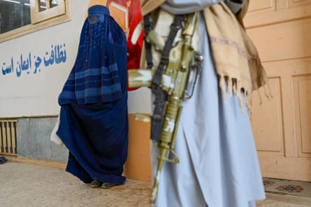

The 300-plus reported cases of Afghan women being killed by men since the Taliban seized power are just “the tip of the iceberg” when it comes to the true scale of gender-based violence in Afghanistan , according to new data analysis.
Open-source investigators at the Centre of Information Resilience ’s Afghan Witness project combed through social media and news sites to record 332 reported cases of femicide since the Taliban took Kabul on 15 August 2021.
The analysis , which is one of the first attempts to try to collect data on the levels of sexual and physical violence against women in Afghanistan, also found 840 women and girls had been subject to gender-based violence from 1 January 2022 – when Afghan Witness began collating data – to 30 June this year, almost one a day.
More than half of the reported cases said that Taliban officials were responsible. Analysis of crimes allegedly perpetrated by the Taliban revealed 115 incidents of sexual violence, including forced marriage, sexual slavery, assault and rape.
Another 73 incidents concerned non-sexual violence and torture, while 113 involved the reported arrests of women, many for flouting the regime’s repressive policies on women and girls, which include forbidding them to travel significant distances without a male guardian.
The Taliban’s shutdown of most independent media outlets and the widespread restriction and persecution of journalists – as well as continuing political repression and online intimidation – means that the number of cases reported is likely to be a vast underestimation of the true scale of death and violence inflicted on Afghan women, according to David Osborn, the project director of Afghan Witness.
“What we have collected is only the tip of the iceberg,” he says. “[It is] more and more difficult for Afghan women to speak out and for us to document gender-based violence and the impact of Taliban rule on women and girls.”
In the three years since seizing power from the US-backed government, the Taliban have imposed what human rights groups are calling a “gender apartheid” on Afghanistan’s 14 million women and girls, excluding them from almost every aspect of public life and denying them access to the justice system.
Women and girls are blocked from attending secondary school; banned from almost every form of paid employment; prevented from walking in public parks, attending gyms or beauty salons ; and told to comply with a strict dress code.
The Taliban have also announced the reintroduction of the public flogging and stoning of women for adultery .
A UN survey last December found that 76% of Afghan women and girls who responded classed their mental health since the Taliban seized power as “bad” or “very bad”, reporting insomnia, depression, anxiety, loss of appetite and headaches as a result of their trauma.
A Taliban guard stands by as an Afghan woman waits to receive a winter kit from Unicef at Fayzabad in Badakhshan province, 25 February 2024.Photograph: Wakil Kohsar/AFP/Getty Images
In response to repressive Taliban policies, some women have continued to resist, staging a series of street protests in Kabul and other major cities. Last month, the Guardian published accounts from female protesters who described how they were beaten, abused or jailed for speaking out – one video viewed by the Guardian appeared to show a female protester being raped inside a Taliban jail.
Afghan Witness’s open-source data analysis also chronicles how public protests against the Taliban regime have declined significantly over the past three years.
The research shows that in the months after the 2021 Taliban takeover, 88% of protests were held outdoors. This dropped to 49% in 2022 and continued to fall. Now 94% of demonstrations are held online, often with locations and identities hidden.
The Taliban also appear to have tightened their enforcement of certain restrictions over the past year. Afghan Witness verified footage of women being arrested “en masse” in Kabul in January 2024, allegedly for failing to comply with hijab rules. Some young women who said that they were arrested for “bad hijab’’ also say they were subject to violence and sexual assault while in detention.
- Information and support for anyone affected by rape or sexual abuse issues is available from the following organisations. In the UK, Rape Crisis offers support on 0808 500 2222 in England and Wales, 0808 801 0302 in Scotland , or 0800 0246 991 in Northern Ireland . In the US, Rainn offers support on 800-656-4673. In Australia, support is available at 1800Respect (1800 737 732). Other international helplines can be found at ibiblio.org/rcip/internl.html